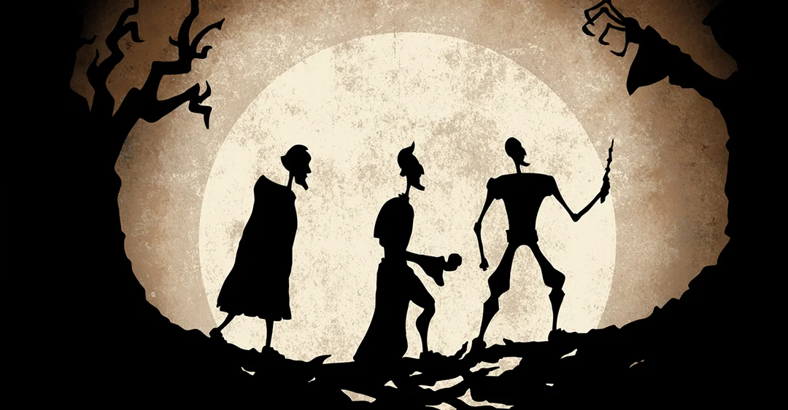
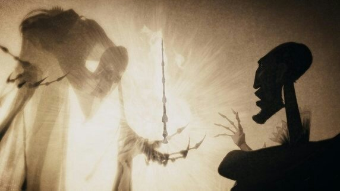
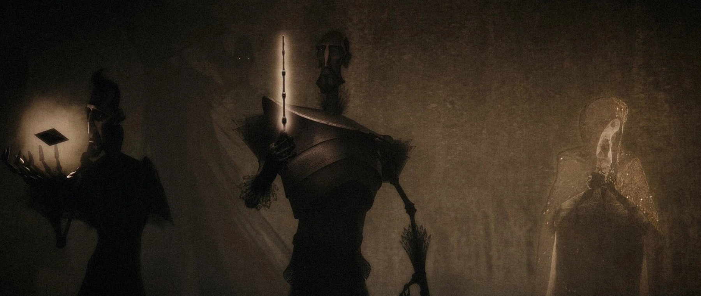
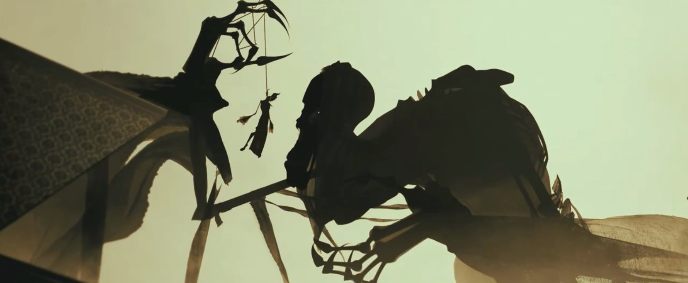
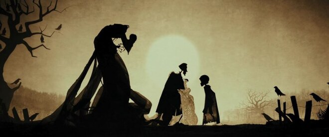

Жили-были трое братьев, и вот однажды отправились они путешествовать. Шли они в сумерках дальней дорогой и пришли к реке. Была она глубокая - вброд не перейти, и такая быстрая, что вплавь не перебраться. Но братья были сведущи в магических искусствах. Взмахнули они волшебными палочками - и вырос над рекою мост. Братья были уже на середине моста, как вдруг смотрят - стоит посреди дороги кто-то, закутанный в плащ.
И Смерть заговорила с ними. Она очень рассердилась, что три жертвы ускользнули от нее, ведь обычно путники тонули в реке. Но Смерть была хитра. Она притворилась, будто восхищена мастерством братьев, и предложила каждому выбрать себе награду за то, что они ее перехитрили.

И вот старший брат, человек воинственный, попросил волшебную палочку, самую могущественную на свете, чтобы ее
хозяин всегда побеждал в поединке. Такая волшебная палочка достойна человека, победившего саму Смерть! Тогда
Смерть отломила ветку с куста бузины, что рос неподалеку, сделала из нее волшебную палочку и дала ее старшему
брату.
Второй брат был гордец. Он захотел еще больше унизить Смерть и потребовал у нее силу вызывать умерших. Смерть
подняла камешек, что лежал на берегу, и дала его среднему брату. Этот камень, сказала она, владеет силой
возвращать мертвых.
Спросила смерть младшего брата, что он желает. Младший был самый скромный и самый мудрый из троих и не доверял
он Смерти, а потому попросил дать ему такую вещь, чтобы он смог уйти оттуда и Смерть не догнала бы его.
Недовольна была Смерть, но ничего не поделаешь - отдала ему свою мантию-невидимку.
Тогда отступила Смерть и пропустила троих братьев через мост. Пошли они дальше своей дорогой и всё толковали промеж собой об этом приключении да восхищались чудесными вещицами, что подарила Смерть.

Долго ли, коротко ли, разошлись братья каждый в свою сторону.
Первый брат странствовал неделю, а может, больше, и пришел в одну далекую деревню.
Отыскал он там волшебника, с которым был в ссоре. Вышел у них поединок, и, ясное дело, победил старший брат - да
и как могло быть иначе, когда у него в руках была бузинная палочка? Противник остался лежать мертвым на земле, а
старший брат пошел на постоялый двор и там давай хвастаться, какую чудо-палочку он добыл у самой Смерти, - с нею
никто не победит его в бою.
В ту же ночь один волшебник пробрался к старшему брату, когда тот лежал и храпел, пьяный вдрызг, на своей
постели. Вор унес волшебную палочку, а заодно перерезал старшему брату горло.
Так Смерть забрала первого брата.
Тем временем средний брат вернулся к себе домой, а жил он один-одинёшенек. Взял он камень, что мог вызывать
мертвых, и три раза повернул в руке. Что за чудо - стоит перед ним девушка, на которой он мечтал жениться, да
только умерла она ранней смертью.
Но была она печальна и холодна, словно какая-то занавесь отделяла её от среднего брата. Хоть она и вернулась в
подлунный мир, не было ей здесь места, и горько страдала она. В конце концов средний брат сошёл с ума от
безнадежной тоски и убил себя, чтобы только быть вместе с любимой.
Так Смерть забрала и второго брата.

Третьего же брата искала Смерть много лет, да так и не нашла. А когда младший брат состарился, то сам снял мантию-невидимку и отдал её своему сыну. Встретил он Смерть как давнего друга и своей охотой с нею пошел, и как равные ушли они из этого мира.